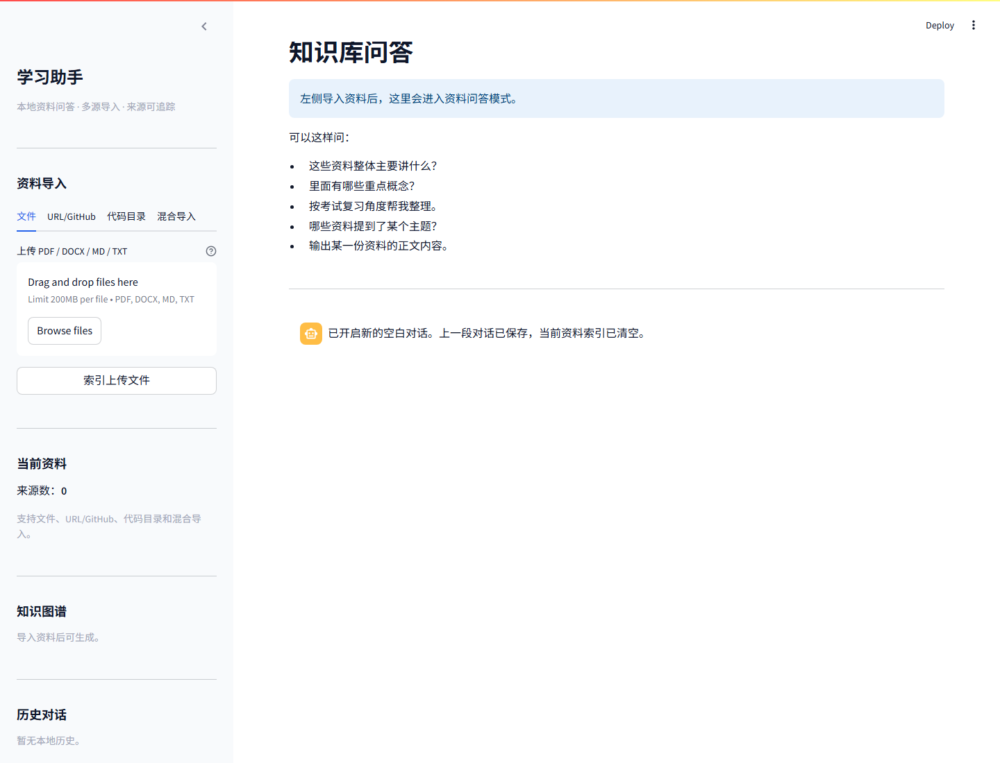
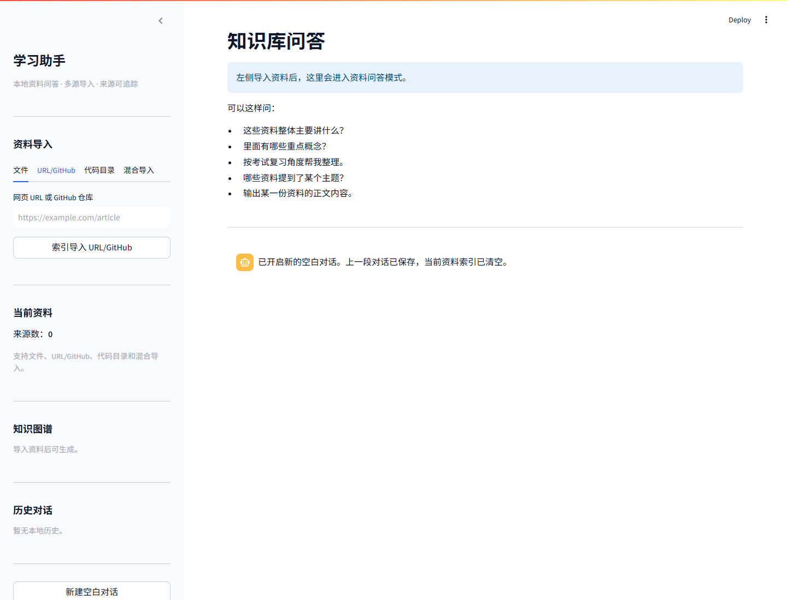
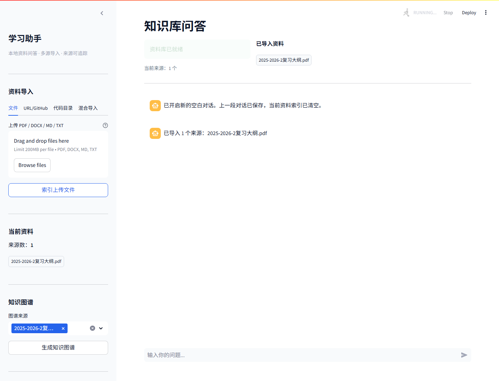
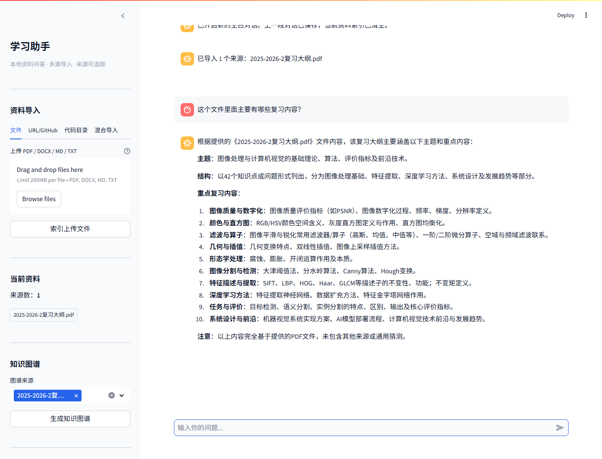
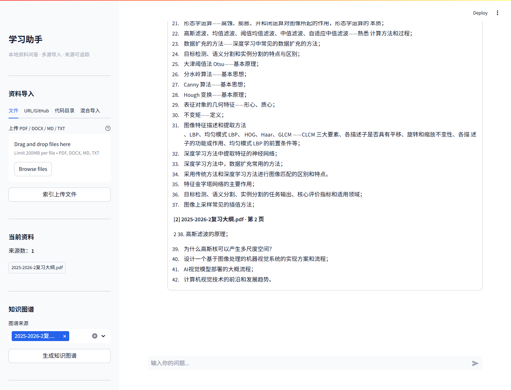
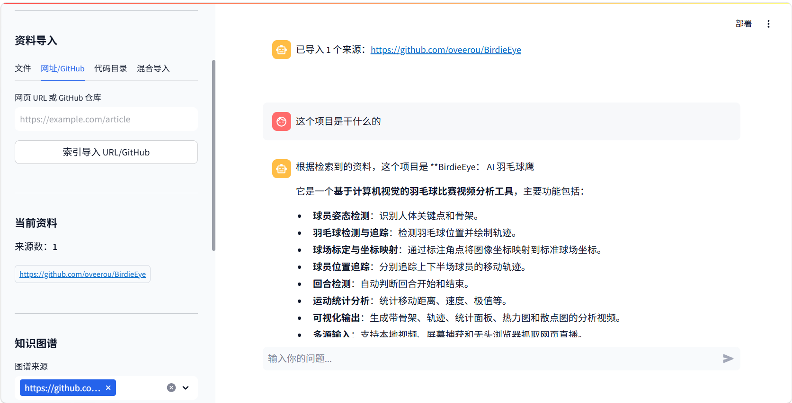
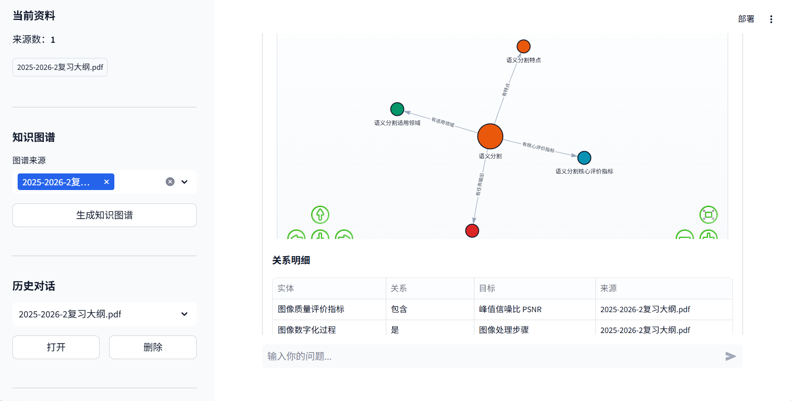
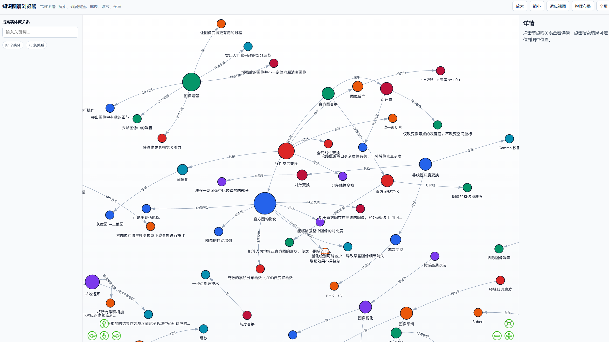

本地多源知识库问答助手。支持 PDF / DOCX / 网页 / GitHub / 代码目录导入， 基于 Agent 意图规划、混合检索与知识图谱抽取，提供可溯源的精准问答。
前几月期末复习，想要一个能快速整理资料、精准回答问题、自动生成知识图谱的工具，找了几个开源的感觉总是太蠢缺点智能感，于是自己做了一个 RAG 知识库 Agent，后面又加上了网页抓取、GitHub 仓库索引、本地代码目录和多源数据渠道。
从资料导入到知识图谱，覆盖完整的学习与问答工作流。
支持 PDF、DOCX、Markdown、TXT 文件上传，网页 URL 抓取，GitHub 仓库克隆索引，本地代码目录扫描，以及多种来源混合导入。
RAGLLM 驱动的查询理解层，自动识别 5 种意图（闲聊 / 资料清单 / 概览总结 / 全文输出 / 知识问答），智能选择检索范围和来源过滤策略。
Agent基于 Qdrant 的向量相似度检索，配合 FlashRank 交叉编码器重排序，以及 LLMChainFilter 语义过滤，确保召回质量。
RAG从选定资料中自动抽取实体关系三元组，生成交互式知识图谱可视化，支持全屏展示和关系明细表格查看。
Graph每个回答都附带精确的来源引用，可展开查看引用片段的文件名、页码和原文内容，杜绝幻觉。
RAG支持多轮对话保存与加载，新建对话时自动归档旧记录并清空索引，保持工作区整洁。
UIAgent 规划 → 混合检索 → 知识增强的完整 RAG 流水线。
从资料导入到知识图谱，完整的使用流程。

左侧资料导入面板，右侧知识库问答区域。支持文件、URL/GitHub、代码目录、混合导入四种方式。

支持网页 URL 和 GitHub 仓库直接索引导入，自动抓取和解析内容。

导入完成后显示已索引来源，侧边栏知识图谱区域可选择来源生成图谱。

Agent 自动识别概览意图，结构化总结资料主题、重点内容和知识体系。

每个回答都标注来源文件和页码，可追溯至原文片段，杜绝大模型幻觉。

直接输入 GitHub 仓库地址，自动克隆、解析代码文件并建立索引，支持对代码库进行自然语言问答。

从选定资料中抽取实体关系三元组，生成交互式力导向图，附带关系明细表格。

全屏模式下的知识图谱可视化，支持拖拽、缩放、节点高亮等交互操作。
基于主流 AI 工程框架，本地优先，数据不出机器。
5 分钟本地部署，无需 Docker。
复制 .env.example 为 .env，填入你的 LLM API Key（支持 Groq、DeepSeek 等 OpenAI 兼容接口）。
浏览器打开 http://localhost:8501 即可使用。
模块化设计，职责清晰。